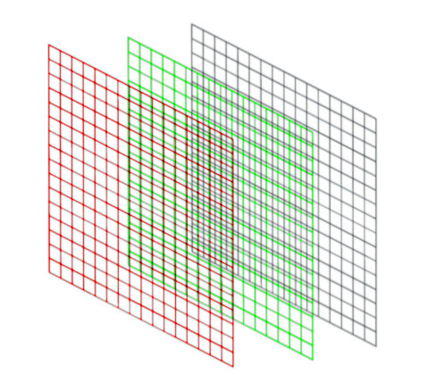

Chapitre 10 Aller plus loin avec les objets, crochets et la programmation fonctionnelle
Ce qui a été présenté dans ce module repose sur les fonctions du package tidyverse. Cette approche tend à se généraliser depuis quelques années, mais quand on cherche la réponse à un problème sur Internet, on trouve d’autres façons de programmer en R, qui font appel aux fonctions du package base et non du tidyverse
\(\Rightarrow\) Cette partie donne quelques clés de compréhension.
10.1 Les objets dans R
Rappel : en informatique, un objet est défini par : ses attributs et ses méthodes (fonctions). Dans l’exemple du jeu d’échec, chaque pièce peut être vue comme un objet :
- sa position sur le plateau constitue ses attributs
- sa façon de se déplacer peut être vue comme une fonction qui ne s’applique qu’à ce type de pièce, donc une méthode
R est un langage orienté objet ; ces objets permettent de structurer les données selon leurs caractéristiques \(\Rightarrow\) on retrouve les données dans les attributs. Les méthodes sont en général transparentes pour l’utilisateur (cf. utilisation des fonctions summary, plot…). Les objets les plus courants sont les suivants :
- Vecteurs : suite unidimensionnelle de valeurs ayant le même type.
- Facteurs : vecteur qui prend un nombre limité de modalités (exemple : sexe). Il est défini par les niveaux (
levels) et les libellés associés (labels). - Matrice et arrays : suites multidimensionnelles de valeurs (matrices=dimension 2 ; array=dimension n).
- Liste : ensemble d’objets différents. On peut stocker un vecteur alphanumérique + une matrice numérique dans une liste.
- Tableaux (
data.frame) : Objet qui ressemble le plus aux tables Excel, SAS ou SPSS… : description d’individus statistiques (observations, en ligne) par des caractéristiques (variables, en colonnes). - Fonctions : Objets particuliers qui donnent un résultat à partir de paramètres en entrée.
- Autres objets : Il existe un très grand nombre d’objets ad hoc dans R. Par exemple
- ts (time serie) pour les séries temporelles,
- lm (linear model) qui contient tous les résultats d’une régression linéraire…
- des graphiques
- On peut même en définir de nouveaux soi-même !
La fonction c permet de lister simplement les valeurs que l’on veut stocker dans l’objet ; la fonction seq génére une suite incrémentée. Il existe aussi la fonction rep qui réplique n fois la même valeur.
10.1.1 Créer des vecteurs
v1 <- seq(1 : 10)
v2 <- c ("lundi", "mardi", "mercredi", "jeudi",
"vendredi", "samedi", "dimanche")10.1.2 Créer une matrice
m <- matrix (v1, nrow = 10, ncol = 7)
l <- list (v1, v2, m)10.1.3 Visualiser ces objets et leurs attributs
Quelques fonctions simples : print, View, names, colnames, rownames, typeof, str, dim
v1## [1] 1 2 3 4 5 6 7 8 9 10print (v2)## [1] "lundi" "mardi" "mercredi" "jeudi" "vendredi" "samedi" "dimanche"typeof (v2) # Permet de visualiser le type ## [1] "character"dim (m)## [1] 10 7str (l) # Permet de visualiser les attributs ## List of 3
## $ : int [1:10] 1 2 3 4 5 6 7 8 9 10
## $ : chr [1:7] "lundi" "mardi" "mercredi" "jeudi" ...
## $ : int [1:10, 1:7] 1 2 3 4 5 6 7 8 9 10 ...10.2 Sélectionner des lignes et des colonnes
Il est aussi possible d’accéder aux éléments d’un dataframe à partir du numéro de ligne et de colonne, grâce aux crochets :

base[1,3]\(\rightarrow\) valeur de la première ligne et de la troisième colonnebase[2,]\(\rightarrow\) toutes les variables pour la 2e observationbase[,4]\(\rightarrow\) toutes les observations de la quatrième colonnebase[,’V6’]\(\rightarrow\) toutes les observations de la variable V6- \(\Rightarrow\) Utile pour sélectionner une partie d’une table :
base[1:4, c(3, 6)]
10.3 Créer une nouvelle fonction en R
La fonction est un objet comme les autres, qu’on crée avec l’opérateur d’affectation. Elle est définie par des paramètres et elle se termine par la fonction return(). On reprend l’exemple du calcul de l’IMC
calcul_IMC <- function (poids, taille)
{
## La taille est exprimée en mètres
imc <- poids / taille ^ 2
return (imc)
}
calcul_IMC (poids = 80, taille = 1.89)## [1] 22.39579calcul_IMC (poids = 60, taille = 1.55)## [1] 24.9739910.4 Les boucles conditionnelles
Les commandes if et else sont bien entendues utilisables. Le “then” n’existe pas : il est implicite après les accolades.
diag_IMC <- function(poids,taille)
{
imc <- poids / taille ^ 2
if (imc < 18.5) {diag <- "maigre"}
else if (imc < 25) {diag <- "normal"}
else {diag <- "surpoids"}
return (diag)
}
diag_IMC (poids=60,taille=1.89)## [1] "maigre"diag_IMC (poids=80,taille=1.89)## [1] "normal"diag_IMC (poids=80,taille=1.55)## [1] "surpoids"10.5 Les boucles
On peut utiliser les boucles classiques : repeat, while, for :
for (pp in seq(from = 50, to = 100, by = 5))
{
print(paste ("Taille = 1,70m, poids =", pp, "Diagnotic :",
diag_IMC (poids = pp, taille = 1.70)))
}## [1] "Taille = 1,70m, poids = 50 Diagnotic : maigre"
## [1] "Taille = 1,70m, poids = 55 Diagnotic : normal"
## [1] "Taille = 1,70m, poids = 60 Diagnotic : normal"
## [1] "Taille = 1,70m, poids = 65 Diagnotic : normal"
## [1] "Taille = 1,70m, poids = 70 Diagnotic : normal"
## [1] "Taille = 1,70m, poids = 75 Diagnotic : surpoids"
## [1] "Taille = 1,70m, poids = 80 Diagnotic : surpoids"
## [1] "Taille = 1,70m, poids = 85 Diagnotic : surpoids"
## [1] "Taille = 1,70m, poids = 90 Diagnotic : surpoids"
## [1] "Taille = 1,70m, poids = 95 Diagnotic : surpoids"
## [1] "Taille = 1,70m, poids = 100 Diagnotic : surpoids"10.6 Exercices
10.6.1 Vecteurs simples
- Créer trois vecteurs : un numérique, un caractère et un facteur. Vous pouvez vous aider des fonctions
c(),rnorm()(génération d’une variable aléatoire selon une loi normale),seq()ourep() - Regrouper ces variables dans un dataframe, puis dans une liste. Dans les deux configurations, afficher la variable contenant les tailles (vtaille). Pour la liste, utiliser les [] et [[]].
rm (list = ls ())
x <- c (1, 160, 2, 9, 60)
x1 <- c("Je", "programme", "en", "R") # Guillemets pour indiquer que c'est une variable textuelle
y <- seq (from = 1, to = 10, by = 1)
z <- rep (x = 1, times = 100)
x <- rnorm (n = 30)
# création de vecteurs avec la fonction c() = combine
v1 <- c( 3, 4, 12, 15, 32, 6, 1, 2, 3, 9)
# avec la fonction seq() = sequence, généralisation de la syntaxe ci-dessus
v2 <- seq(from = 1 , to = 15 , by = 1.5)
# syntaxe équivalente mais préférable car plus lisible :
v2b <- seq (from=1, to=15, by=1.5)
v3 <- 1:10
# avec la fonction rep() = répétition
v4 <- rep (x = 4, times = 10)
# ces commandes peuvent être combinées. Pratique pour créer des variables "facteur"
v5 <- rep (x = c(3, 4, 1.2, 8, 9), times = 2)
v6 <- rep (x = 1:5, times = 2)
# vecteurs de type texte ou factor
vtaille <- rep (x = c ("S", "L"), times = 5)
vtaille <- factor (vtaille)
# concaténation de vecteurs
gtaille <- paste("X", vtaille, sep = "")
gtaille <- factor (gtaille)
toutes_taille <- c (as.character (vtaille), as.character (gtaille))
toutes_taille <- as.factor (toutes_taille)
levels (toutes_taille)## [1] "L" "S" "XL" "XS"10.6.2 Dataframes et listes
dataf <- data.frame (vtaille, v1, v2, v3, v4, v5, v6)
liste <- list (vtaille, v1, v2, v3, v4, v5, v6)
names(liste) <- c ("vtaille", "v1", "v2", "v3", "v4", "v5", "v6")
dataf$vtaille## [1] S L S L S L S L S L
## Levels: L Sliste$vtaille## [1] S L S L S L S L S L
## Levels: L Srm (dataf, vtaille, v1, v2, v2b, v3, v4, v5, v6)10.6.3 Pour aller plus loin : matrices et arrays
Les matrices et les arrays permettent des calculs rapides et efficaces, et peuvent être très pratiques et optimisent le stockage des données. Ils demandent cependant plus de réflexion en amont quant à leur utilisation, mais . On accède aux éléments avec les [].
- Créer une matrice à 10 lignes et 10 colonnes remplie avec un tirage aléatoire selon une loi normale centrée réduit.
- Créer un hypercube avec la fonction
array()avec 10 lignes, 5 colonnes et de profondeur 3, toujours avec un tirage aléatoire selon une loi normale
Un hypercube de trois dimensions peut être représenté comme suit : 
mat <- matrix(rnorm(50), ncol = 5, nrow = 10)
arr <- array(rnorm(150),dim = c(10,5,3))
mat## [,1] [,2] [,3] [,4] [,5]
## [1,] 1.4704016 0.06611292 -0.19267472 0.61818224 0.727807630
## [2,] 1.9697550 -0.47718641 0.05483175 1.83551428 -1.009176365
## [3,] -0.9866953 3.30874759 -0.03464381 -1.35924002 -0.007525397
## [4,] 0.0112638 -1.01056572 -1.31953062 1.35630954 1.114239145
## [5,] -0.2117940 0.68820823 -0.01309241 -0.66526172 -0.864822420
## [6,] 0.9205981 -1.16774215 -0.15972542 0.08688058 -1.482296253
## [7,] 0.2494718 0.37381266 1.15785243 -0.09617666 -0.689659184
## [8,] -0.5775302 -0.41974558 1.27201907 0.32358282 1.079620902
## [9,] 1.6002739 -0.44591294 1.27385291 0.56177719 1.069128832
## [10,] 1.5989952 -0.32070510 -0.22388832 -1.98339773 -0.403774668arr## , , 1
##
## [,1] [,2] [,3] [,4] [,5]
## [1,] -1.29237012 1.8268202 0.51921782 0.54783980 0.01859878
## [2,] 1.35717170 0.3288017 0.08588212 -0.65810835 -0.82626037
## [3,] 0.34193629 -0.5983830 0.36737097 -1.71089492 -0.93914369
## [4,] 0.38546982 -0.6343357 0.62566510 0.09849613 1.55690669
## [5,] 0.06472883 1.2624667 -0.03150256 -1.07587885 -0.66854643
## [6,] 0.17072820 1.3608416 -0.93956912 1.75826589 0.53013620
## [7,] -0.66368181 0.1782711 -1.39680468 0.49963406 1.29883870
## [8,] -0.45787142 -0.4660769 2.35366282 0.41307903 -1.51890112
## [9,] -0.32154905 0.4701995 0.20960049 1.29718169 -2.50758426
## [10,] 0.36937498 -1.6975357 0.77251094 -0.11051644 0.47901683
##
## , , 2
##
## [,1] [,2] [,3] [,4] [,5]
## [1,] 0.48496562 -0.03492875 -0.19766619 1.329512206 -0.8540331
## [2,] -0.08594712 0.49509673 -0.66958621 -0.089738819 0.9873441
## [3,] 0.60487258 -0.38925583 1.04927170 0.667562456 -0.9524362
## [4,] 1.24080360 -0.39702819 -2.33995414 -0.643812697 -0.2999225
## [5,] -0.72690203 0.42657905 -0.09519256 0.004193966 0.9266832
## [6,] -0.43622144 -0.62760853 0.88276132 2.010730564 -0.2300346
## [7,] 0.52535419 1.80211439 0.21996904 0.694577842 -0.1359607
## [8,] 0.96159504 0.59820047 -0.47775418 1.005905983 1.2236044
## [9,] 0.19846622 0.01641627 -1.77920639 -0.386956433 1.2137106
## [10,] 0.56208501 -0.86268003 -0.13502280 -0.935394496 2.3252414
##
## , , 3
##
## [,1] [,2] [,3] [,4] [,5]
## [1,] 0.81555796 1.5682902 -1.95519301 -0.57486776 -1.64588421
## [2,] -1.10177905 0.6187618 -0.50034823 -0.24792243 -0.36542480
## [3,] -1.06101913 1.0098758 -0.76298107 1.88727316 -0.47433071
## [4,] 0.13651356 0.4702280 -1.16155663 -0.04538542 -0.03325519
## [5,] -0.25104312 0.7352819 1.02850376 0.43062558 0.45525685
## [6,] 0.28356013 1.5453576 -1.67628686 -0.26338441 0.68740085
## [7,] -0.08778857 0.1331438 -1.10859178 0.24511220 -1.90620442
## [8,] 0.59377365 0.3836979 0.07904839 -0.29063755 1.42817750
## [9,] 0.10264078 0.2234653 -0.88177122 -0.09007841 0.10226317
## [10,] 1.24339559 -0.2371316 -1.34826303 2.78796898 -2.20115828Pourquoi s’embêter avec ça ? Parce qu’on peut appliquer des fonctions facilement sur les lignes, colonnes et autres dimensions grâce à la fonction apply().
Exemple : résultats de validations croisées par bloc, simulations de loi selon différents paramètres. Et on calcule facilement des statistiques “marginales.”
Par, exemple, sur une matrice, on peut calculer des statistiques par lignes :
apply(mat, MARGIN = 1, FUN=mean)## [1] 0.53796594 0.47474765 0.18412861 0.03034323 -0.21335247 -0.36045703
## [7] 0.19906020 0.33558940 0.81182397 -0.26655412Ou par colonnes :
apply(mat, MARGIN = 2, FUN=mean)## [1] 0.60447397 0.05950235 0.18150009 0.06781705 -0.04664578Sur notre hypercube de type array, on peut aussi calculer des stats sur ses différentes dimensions :
apply (arr, MARGIN = 3, FUN=mean)## [1] 0.06066400 0.17348748 -0.02554225apply (arr, MARGIN = c(2,3), FUN = mean)## [,1] [,2] [,3]
## [1,] -0.004606257 0.3329072 0.06738118
## [2,] 0.203106949 0.1026906 0.64509707
## [3,] 0.256603390 -0.3542380 -0.82874397
## [4,] 0.105909804 0.3656581 0.38387039
## [5,] -0.257693866 0.4204197 -0.39531592Le coin du capitaine [ ]
Le crochet, c’est comme le capitaine du même nom : personne ne l’aime, mais sans lui, pas de Peter Pan, pas de Neverland ! Moralité, on s’en sert beacoup pour pimenter les codes ! On peut utiliser les crochets pour accéder aux éléments des matrices/arrays et dataframe/listes.
- Matrices et arrays
mat [1,1]## [1] 1.470402mat [1,]## [1] 1.47040162 0.06611292 -0.19267472 0.61818224 0.72780763mat [,1]## [1] 1.4704016 1.9697550 -0.9866953 0.0112638 -0.2117940 0.9205981
## [7] 0.2494718 -0.5775302 1.6002739 1.5989952arr [1,1,1]## [1] -1.29237arr [1,,]## [,1] [,2] [,3]
## [1,] -1.29237012 0.48496562 0.8155580
## [2,] 1.82682018 -0.03492875 1.5682902
## [3,] 0.51921782 -0.19766619 -1.9551930
## [4,] 0.54783980 1.32951221 -0.5748678
## [5,] 0.01859878 -0.85403311 -1.6458842arr [,,1]## [,1] [,2] [,3] [,4] [,5]
## [1,] -1.29237012 1.8268202 0.51921782 0.54783980 0.01859878
## [2,] 1.35717170 0.3288017 0.08588212 -0.65810835 -0.82626037
## [3,] 0.34193629 -0.5983830 0.36737097 -1.71089492 -0.93914369
## [4,] 0.38546982 -0.6343357 0.62566510 0.09849613 1.55690669
## [5,] 0.06472883 1.2624667 -0.03150256 -1.07587885 -0.66854643
## [6,] 0.17072820 1.3608416 -0.93956912 1.75826589 0.53013620
## [7,] -0.66368181 0.1782711 -1.39680468 0.49963406 1.29883870
## [8,] -0.45787142 -0.4660769 2.35366282 0.41307903 -1.51890112
## [9,] -0.32154905 0.4701995 0.20960049 1.29718169 -2.50758426
## [10,] 0.36937498 -1.6975357 0.77251094 -0.11051644 0.47901683- dataframes et listes :
Pour les dataframes, le fonctionnement est le même que pour les matrices. Pour les listes, une paire de crochet renvoie un résultat sous forme de liste, un double crochet renvoie le résultat sous sa forme naturelle (ex : vecteur ou matrice).
str (liste [1])## List of 1
## $ vtaille: Factor w/ 2 levels "L","S": 2 1 2 1 2 1 2 1 2 1str (liste [[1]])## Factor w/ 2 levels "L","S": 2 1 2 1 2 1 2 1 2 1liste["v6"]## $v6
## [1] 1 2 3 4 5 1 2 3 4 5liste[c("v6", "v5")]## $v6
## [1] 1 2 3 4 5 1 2 3 4 5
##
## $v5
## [1] 3.0 4.0 1.2 8.0 9.0 3.0 4.0 1.2 8.0 9.0Dans la syntaxe
tidyverse, on ne met pas (obligatoirement) de guillemets pour les noms de variable, alors qu’on le fait pour la version [ ].
10.6.4 Inspection d’un objet : la régression

La régression linéaire consiste à exprimer une variable Y en fonction d’une variable X dans une fonction linéaire. C’est à dire qu’on cherche a et b tels que : \[ Y = a \cdot X + b + \epsilon\]
où \(\epsilon\) est le résidu de la régression. On utilise dans cet exemple la table des iris de Fisher, existant dans R base qu’il suffit d’appeler avec data(iris) (il existe d’autres dataframe inclus dans les packages et qui sont utilisés en exemple dans l’aide).
data ("iris")
str (iris)## 'data.frame': 150 obs. of 5 variables:
## $ Sepal.Length: num 5.1 4.9 4.7 4.6 5 5.4 4.6 5 4.4 4.9 ...
## $ Sepal.Width : num 3.5 3 3.2 3.1 3.6 3.9 3.4 3.4 2.9 3.1 ...
## $ Petal.Length: num 1.4 1.4 1.3 1.5 1.4 1.7 1.4 1.5 1.4 1.5 ...
## $ Petal.Width : num 0.2 0.2 0.2 0.2 0.2 0.4 0.3 0.2 0.2 0.1 ...
## $ Species : Factor w/ 3 levels "setosa","versicolor",..: 1 1 1 1 1 1 1 1 1 1 ...Faire la régression de la Sepal.Length sur Petal.length à l’aide de la fonction lm()
lm (data = iris, formula = Sepal.Length ~ Petal.Length)##
## Call:
## lm(formula = Sepal.Length ~ Petal.Length, data = iris)
##
## Coefficients:
## (Intercept) Petal.Length
## 4.3066 0.4089On a les paramètres a et b mais on aimerait en savoir plus… Au moins la qualité d’ajustement (le \(R^2\) par exemple), et un graphique des résidus pour détecter une éventuelle structure. Pour cela, stocker le résultat dans un nouvel objet, et explorez-le avec les fonctions str(), summary() et plot()
reg <- lm(data = iris, formula = Sepal.Length ~ Petal.Length)
str (reg)## List of 12
## $ coefficients : Named num [1:2] 4.307 0.409
## ..- attr(*, "names")= chr [1:2] "(Intercept)" "Petal.Length"
## $ residuals : Named num [1:150] 0.2209 0.0209 -0.1382 -0.32 0.1209 ...
## ..- attr(*, "names")= chr [1:150] "1" "2" "3" "4" ...
## $ effects : Named num [1:150] -71.566 8.812 -0.155 -0.337 0.104 ...
## ..- attr(*, "names")= chr [1:150] "(Intercept)" "Petal.Length" "" "" ...
## $ rank : int 2
## $ fitted.values: Named num [1:150] 4.88 4.88 4.84 4.92 4.88 ...
## ..- attr(*, "names")= chr [1:150] "1" "2" "3" "4" ...
## $ assign : int [1:2] 0 1
## $ qr :List of 5
## ..$ qr : num [1:150, 1:2] -12.2474 0.0816 0.0816 0.0816 0.0816 ...
## .. ..- attr(*, "dimnames")=List of 2
## .. .. ..$ : chr [1:150] "1" "2" "3" "4" ...
## .. .. ..$ : chr [1:2] "(Intercept)" "Petal.Length"
## .. ..- attr(*, "assign")= int [1:2] 0 1
## ..$ qraux: num [1:2] 1.08 1.1
## ..$ pivot: int [1:2] 1 2
## ..$ tol : num 1e-07
## ..$ rank : int 2
## ..- attr(*, "class")= chr "qr"
## $ df.residual : int 148
## $ xlevels : Named list()
## $ call : language lm(formula = Sepal.Length ~ Petal.Length, data = iris)
## $ terms :Classes 'terms', 'formula' language Sepal.Length ~ Petal.Length
## .. ..- attr(*, "variables")= language list(Sepal.Length, Petal.Length)
## .. ..- attr(*, "factors")= int [1:2, 1] 0 1
## .. .. ..- attr(*, "dimnames")=List of 2
## .. .. .. ..$ : chr [1:2] "Sepal.Length" "Petal.Length"
## .. .. .. ..$ : chr "Petal.Length"
## .. ..- attr(*, "term.labels")= chr "Petal.Length"
## .. ..- attr(*, "order")= int 1
## .. ..- attr(*, "intercept")= int 1
## .. ..- attr(*, "response")= int 1
## .. ..- attr(*, ".Environment")=<environment: R_GlobalEnv>
## .. ..- attr(*, "predvars")= language list(Sepal.Length, Petal.Length)
## .. ..- attr(*, "dataClasses")= Named chr [1:2] "numeric" "numeric"
## .. .. ..- attr(*, "names")= chr [1:2] "Sepal.Length" "Petal.Length"
## $ model :'data.frame': 150 obs. of 2 variables:
## ..$ Sepal.Length: num [1:150] 5.1 4.9 4.7 4.6 5 5.4 4.6 5 4.4 4.9 ...
## ..$ Petal.Length: num [1:150] 1.4 1.4 1.3 1.5 1.4 1.7 1.4 1.5 1.4 1.5 ...
## ..- attr(*, "terms")=Classes 'terms', 'formula' language Sepal.Length ~ Petal.Length
## .. .. ..- attr(*, "variables")= language list(Sepal.Length, Petal.Length)
## .. .. ..- attr(*, "factors")= int [1:2, 1] 0 1
## .. .. .. ..- attr(*, "dimnames")=List of 2
## .. .. .. .. ..$ : chr [1:2] "Sepal.Length" "Petal.Length"
## .. .. .. .. ..$ : chr "Petal.Length"
## .. .. ..- attr(*, "term.labels")= chr "Petal.Length"
## .. .. ..- attr(*, "order")= int 1
## .. .. ..- attr(*, "intercept")= int 1
## .. .. ..- attr(*, "response")= int 1
## .. .. ..- attr(*, ".Environment")=<environment: R_GlobalEnv>
## .. .. ..- attr(*, "predvars")= language list(Sepal.Length, Petal.Length)
## .. .. ..- attr(*, "dataClasses")= Named chr [1:2] "numeric" "numeric"
## .. .. .. ..- attr(*, "names")= chr [1:2] "Sepal.Length" "Petal.Length"
## - attr(*, "class")= chr "lm"summary (reg)##
## Call:
## lm(formula = Sepal.Length ~ Petal.Length, data = iris)
##
## Residuals:
## Min 1Q Median 3Q Max
## -1.24675 -0.29657 -0.01515 0.27676 1.00269
##
## Coefficients:
## Estimate Std. Error t value Pr(>|t|)
## (Intercept) 4.30660 0.07839 54.94 <2e-16 ***
## Petal.Length 0.40892 0.01889 21.65 <2e-16 ***
## ---
## Signif. codes: 0 '***' 0.001 '**' 0.01 '*' 0.05 '.' 0.1 ' ' 1
##
## Residual standard error: 0.4071 on 148 degrees of freedom
## Multiple R-squared: 0.76, Adjusted R-squared: 0.7583
## F-statistic: 468.6 on 1 and 148 DF, p-value: < 2.2e-16plot (reg)


Les méthodes summary, print et plot sont implémentées pour tous les objets en R, et on peut les utiliser pour avoir un premier aperçu de ce que l’on obtient avec la fonction.